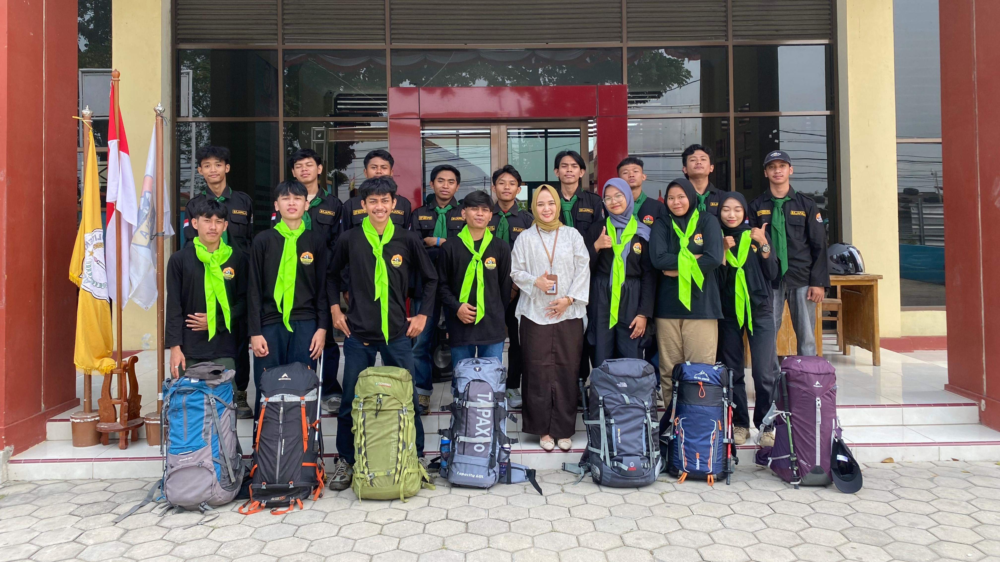

Bajapala
Mahasiswa pecinta alam (Mapala) Politeknik Baja Tegal atau Bajapala didirikan pada tanggal 20 September 2020 didirikan oleh 4 mahasiswa Politeknik Baja Tegal yang memang memiliki rasa kepedulian dan kecintaan terhadap alam, serta ingin menambah ilmu pengetahuan, wawasan dan relasi sesama anggota Mapala.
Selain menyalurkan minat anggota di bidang alam, kegiatan-kegiatan ini juga bertujuan untuk memperkenalkan Politeknik Baja Tegal di kalangan perguruan tinggi lainnya. Kegiatan rutin Bajapala meliputi diksar, dikjut, rapat pengurus, musyawarah anggota, musyawarah besar, dan pemantapan. Kegiatan-kegiatan ini bertujuan untuk meningkatkan pengetahuan dan keterampilan anggota dalam bidang kepecintaan alam.
